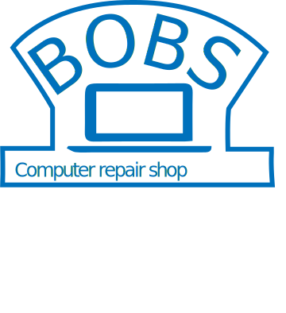

<!--
/*
============================================
; Title:  app.component.html (WK 9)
; Author: Professor Krasso
; Modified By: Aaron Wilson
; Date: 2 September 2019
; Description: Bob's Computer Repair Shop App
; Credits: All images provided by Pexels.com
;===========================================
*/
-->

<!--The content below is only a placeholder and can be replaced.-->

<div class="container">
  <!-- Material Design ToolBar -->
  <mat-toolbar class="toolbar" color="accent">
    <mat-toolbar-row class="menu">
      <button class="hamburger" mat-icon-button>
        <mat-icon (click)="drawer.toggle()">menu</mat-icon>
      </button>

      <span class="menu-spacer"></span>
      

      <div>

        <a mat-button class="links" [routerLink]="'/'"><mat-icon>home</mat-icon> Home </a>
        <a mat-button class="links" [routerLink]="'/orders'"><mat-icon>laptop</mat-icon> Orders </a>

      </div>
    </mat-toolbar-row>

    <mat-toolbar-row class="motto">
      <span style="font-size: 16px;">Welcome to Bob's Computer Repair Shop.</span>
    </mat-toolbar-row>
  </mat-toolbar>

  <div class="lower-content">
    <!-- Material Design SideNav -->
    <mat-sidenav-container>

      <mat-sidenav class="sidenav" #drawer mode="side" opened role="navigation">

        <mat-nav-list class="side-menu">

          <a mat-list-item class="links" [routerLink]="'/profile'"><mat-icon class="nav-button">perm_contact_calendar</mat-icon> My Profile </a>

          <a mat-list-item class="links" [routerLink]="'/settings'"><mat-icon class="nav-button">settings</mat-icon> Settings </a>

          <a mat-list-item class="links" (click)="drawer.toggle()" href="" mat-list-item><mat-icon class="nav-button">exit_to_app</mat-icon> Close </a>

        </mat-nav-list>
      </mat-sidenav>

      <mat-sidenav-content>
        <div class="content">
          <router-outlet></router-outlet>
        </div>
      </mat-sidenav-content>
    </mat-sidenav-container>
  </div>
</div>

